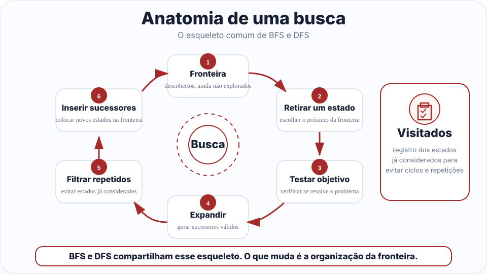
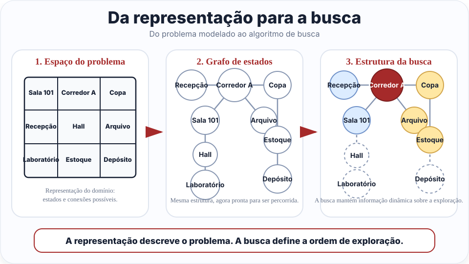
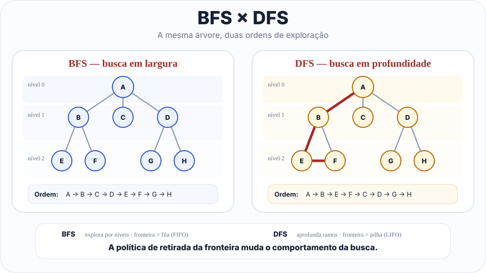
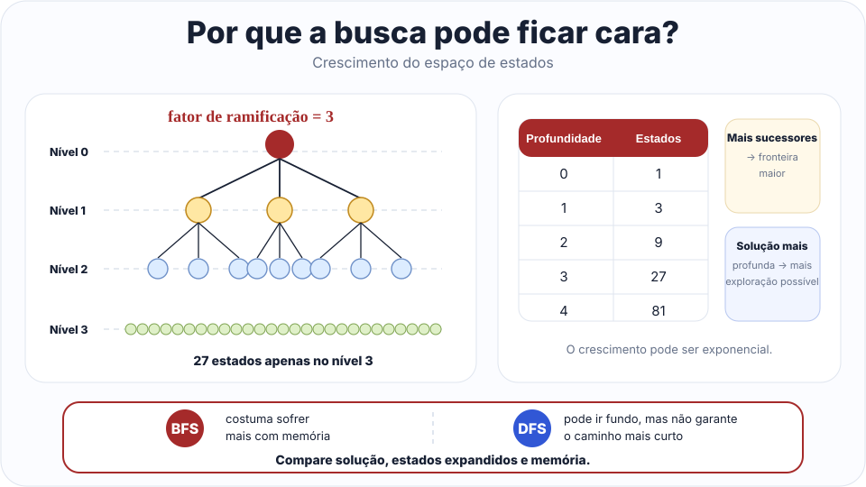

Colocar o estado inicial na fronteira e registrar que ele já foi descoberto.
Aula 04 · material de aprofundamento
Busca não informada: estrutura, garantias e custo
Este material aprofunda o modelo de busca, as estruturas de controle, as garantias formais e os trade-offs de tempo, memória e qualidade da solução em BFS e DFS.
Parte I · Da formulação ao algoritmo
O espaço de estados não é a busca
Depois de formular o problema, precisamos percorrer essa representação de maneira sistemática até encontrar um caminho para o objetivo.
Problema, espaço de estados e solução
Em uma formulação clássica, temos um estado inicial, ações, um modelo de transição, um teste ou conjunto de estados objetivo e, quando necessário, um custo associado às ações. O espaço de estados reúne as situações alcançáveis e as transições possíveis. Uma solução é um caminho que parte do estado inicial e alcança o objetivo.
Em muitos problemas de IA, o espaço de estados não precisa estar completamente materializado em memória. O algoritmo pode descobrir apenas a parte necessária enquanto gera sucessores durante a execução (Russell; Norvig, 2022, §3.3).
Do espaço de estados ao ciclo da busca
Representar o problema é apenas o ponto de partida. Mesmo sabendo quais estados existem e quais movimentos são possíveis, ainda precisamos de um procedimento que escolha o que explorar agora, mantenha outras alternativas disponíveis e repita o processo até encontrar o objetivo.
Esse procedimento é o ciclo da busca. BFS e DFS repetem as mesmas etapas básicas; a diferença aparece na política usada para organizar a fronteira e escolher o próximo estado.
Retirar um estado da fronteira. A regra de retirada define a estratégia de exploração.
Verificar se o estado retirado satisfaz a condição de chegada. Se satisfizer, o caminho pode ser devolvido.
Gerar os sucessores válidos a partir das ações possíveis naquele estado.
Ignorar repetições, colocar os novos estados na fronteira e repetir o ciclo.
Se a fronteira esvaziar antes de encontrar o objetivo, a busca informa falha.

O estado descreve o problema; a busca precisa guardar o percurso
Um estado descreve uma configuração do problema. Se o robô está no Hall, por exemplo, o estado pode ser simplesmente "Hall". Isso responde à pergunta: onde o problema está neste momento?
O algoritmo precisa de informações adicionais para trabalhar. Se encontrar o Laboratório, queremos saber não apenas que ele chegou lá, mas como chegou. Por isso, cada entrada da fronteira pode carregar o estado junto com o caminho percorrido até ele.
estado = "Hall"
caminho = ["Recepção", "Sala 101", "Hall"]
entrada_na_fronteira = (estado, caminho)Estado
É parte da representação do problema. Diz qual configuração foi alcançada. Ex.: "Hall".
Informação da busca
É criada durante a execução. Ajuda o algoritmo a continuar e a devolver a solução. Ex.: o caminho até "Hall".
Na literatura, essas informações podem ser reunidas em um nó de busca, que pode armazenar estado, pai, ação, profundidade e custo. A ideia central é simples: o estado pertence ao problema, enquanto os dados adicionais pertencem ao processo de busca (Russell; Norvig, 2022, §3.3).
O grafo de estados é o mapa; a busca é o percurso sendo construído
O grafo de estados representa as possibilidades do problema: quais estados existem e quais transições ligam um estado a outro. Ele funciona como um mapa das movimentações possíveis.
A execução da busca é dinâmica. Conforme o algoritmo roda, a fronteira muda, novos estados entram em visitados e novos caminhos são construídos. Em outras palavras, o grafo diz o que pode acontecer; as estruturas da busca registram o que o algoritmo já explorou e o que ainda falta explorar.
Grafo de estados
Representação do domínio. Contém estados e transições possíveis. Para uma mesma instância, permanece essencialmente o mesmo.
Estruturas da busca
Memória de trabalho do algoritmo. Fronteira, visitados e caminhos mudam a cada iteração.

Representação
Define quais estados existem e quais transições são possíveis entre eles.
Execução da busca
Mantém a fronteira, os estados visitados e os caminhos enquanto percorre a representação.
Ponto de engenharia
Um algoritmo correto sobre uma representação inadequada ainda pode resolver o problema errado.
Parte II · Controle da exploração
Fronteira, visitados e repetição
Todo algoritmo de busca precisa controlar duas coisas: o que ainda precisa ser explorado e o que já foi descoberto.
A fronteira é o trabalho pendente
Um estado pode ter sido descoberto e ainda não ter sido analisado. Enquanto isso, ele permanece na fronteira. A fronteira funciona como uma lista de tarefas do algoritmo: cada item é uma possibilidade que ainda pode levar ao objetivo.
A estrutura usada para organizar essa lista muda o comportamento da busca. Quando a fronteira é uma fila, o algoritmo tende a explorar por níveis. Quando é uma pilha, tende a aprofundar o caminho mais recente.
Visitados evita andar em círculos
Grafos podem conter ciclos. Se a Recepção leva ao Corredor e o Corredor leva de volta à Recepção, uma busca sem controle de repetição pode ficar gerando os mesmos estados indefinidamente. O conjunto de visitados serve para reconhecer estados que já foram descobertos e evitar esse trabalho repetido.
Expandir é gerar possibilidades
Expandir significa retirar um estado da fronteira e gerar seus sucessores válidos. Por isso, estados descobertos, estados expandidos e tamanho da fronteira são medidas diferentes. Essa separação ajuda a comparar o esforço realizado por BFS e DFS.
Quando marcar como visitado?
Nas implementações didáticas de busca em grafo, o estado inicial começa em visitados. Cada sucessor novo é marcado quando entra na fronteira. Assim, o mesmo estado não fica aguardando várias vezes na estrutura pendente.
se sucessor não está em visitados:
marcar sucessor como visitado
colocar sucessor na fronteiraParte III · Breadth-First Search
BFS transforma proximidade do início em prioridade
A busca em largura organiza a fronteira como uma fila. O primeiro estado inserido é o primeiro a ser retirado, e a exploração avança por níveis de profundidade.
Estrutura
Fila FIFO, primeiro a entrar, primeiro a sair.
Política
Explorar primeiro os estados mais próximos do início.
Efeito
Antes de avançar para profundidade 3, a BFS explora os estados relevantes de profundidade 2.
Estrutura do algoritmo
A BFS começa pelo estado inicial. A cada iteração, retira o estado mais antigo da fronteira, testa se ele é objetivo e, se ainda não for, coloca seus sucessores não visitados no fim da fila.
BFS(inicial, objetivo):
fronteira ← fila com o estado inicial
visitados ← {estado inicial}
enquanto fronteira não estiver vazia:
estado, caminho ← retirar o primeiro
se estado é objetivo:
devolver caminho
para cada sucessor do estado:
se sucessor não foi visitado:
marcar como visitado
adicionar ao fim da fila
devolver falhaExemplo em Python
Em Python, a fila pode ser implementada com deque. Cada item da fronteira carrega dois dados: o estado atual e o caminho usado para chegar até ele.
from collections import deque
def bfs(estado_inicial, objetivo_atingido, sucessores, mostrar_passos=True):
fronteira = deque([(estado_inicial, [estado_inicial])])
visitados = {estado_inicial}
expandidos = []
while fronteira:
estado, caminho = fronteira.popleft()
expandidos.append(estado)
if mostrar_passos:
print("Expandindo:", estado)
print("Fronteira:", list(fronteira))
if objetivo_atingido(estado):
return caminho
for sucessor in sucessores(estado):
if sucessor not in visitados:
visitados.add(sucessor)
novo_caminho = caminho + [sucessor]
fronteira.append((sucessor, novo_caminho))
return NoneA linha mais importante para entender a BFS é popleft(). Ela retira o item mais antigo da fila. Já append() coloca novos sucessores no fim. Essa combinação mantém a exploração por ordem de descoberta.
Completude
Dizer que BFS é completa significa dizer que ela não ignora uma solução que esteja ao seu alcance. Imagine a busca como camadas ao redor do estado inicial: primeiro a profundidade 0, depois a profundidade 1, depois a profundidade 2, e assim por diante.
Se cada estado gera uma quantidade finita de sucessores e se existe uma solução em alguma profundidade finita, a BFS chegará a essa camada em algum momento. Ela pode demorar e consumir muita memória, mas não ficará presa aprofundando um único ramo enquanto deixa soluções rasas para trás (Russell; Norvig, 2022, §3.4).
Optimalidade de custo
A BFS encontra primeiro uma solução com o menor número de ações. Quando todas as ações têm o mesmo custo, isso também significa menor custo total. Se cada movimento custa 1, então um caminho com 3 movimentos custa menos que um caminho com 5 movimentos.
Quando os custos são diferentes, a conclusão muda. Um caminho com menos passos pode ser mais caro que outro com mais passos. Por exemplo, atravessar uma porta pode custar 1, enquanto atravessar outra pode custar 100. Nesse caso, contar passos não basta para escolher a solução mais barata.
Quando os custos são diferentes
Se o problema exige minimizar custo acumulado, a fronteira precisa priorizar o menor custo conhecido, não apenas a menor profundidade. Esse raciocínio leva à busca de custo uniforme, relacionada ao algoritmo de Dijkstra.
O preço da busca por níveis
Se cada estado gerar aproximadamente b sucessores e a solução mais rasa estiver na profundidade d, a análise clássica de busca em árvore apresenta tempo e espaço da ordem de O(b^d). A memória costuma ser o principal gargalo porque uma camada larga pode permanecer inteira na fronteira (Russell; Norvig, 2022, §3.4).
Parte IV · Depth-First Search
DFS transforma recência em prioridade
A busca em profundidade organiza a fronteira como uma pilha. O último estado inserido é o primeiro a ser retirado, e a estratégia aprofunda um ramo antes de voltar às alternativas.
Estrutura do algoritmo
A DFS começa pelo estado inicial. A cada iteração, retira o estado mais recente da fronteira, testa o objetivo e empilha sucessores ainda não visitados.
DFS(inicial, objetivo):
fronteira ← pilha com o estado inicial
visitados ← {estado inicial}
enquanto fronteira não estiver vazia:
estado, caminho ← retirar o último
se estado é objetivo:
devolver caminho
para cada sucessor do estado:
se sucessor não foi visitado:
marcar como visitado
empilhar sucessor
devolver falhaA ordem dos sucessores faz diferença
DFS é particularmente sensível à ordem de geração dos sucessores. Alterar essa ordem pode mudar o ramo explorado primeiro, o caminho encontrado e a quantidade de estados expandidos antes do objetivo.
Completude, ciclos e memória
Em busca em árvore sobre espaços infinitos, DFS não é completa, pois pode continuar indefinidamente em um ramo. Em um grafo finito com controle adequado de visitados, o algoritmo termina porque um mesmo estado não é inserido repetidamente.
A vantagem clássica é o menor consumo de memória em busca em árvore. Com fator de ramificação b e profundidade máxima m, a análise tradicional apresenta espaço O(bm), porque a estratégia mantém principalmente o caminho corrente e as alternativas associadas a ele (Russell; Norvig, 2022, §3.4; Luger, 2009, §3.2).
Parte V · Avaliação de algoritmos
“Funcionou” é uma avaliação insuficiente
Uma estratégia de busca deve ser analisada por suas garantias e pelo esforço necessário para encontrar uma solução.
Se existe solução nas condições consideradas, o algoritmo é garantido a encontrá-la?
A solução devolvida possui o menor custo segundo a função de custo definida?
Quanto trabalho precisa ser realizado no pior caso?
Quanto precisa permanecer armazenado simultaneamente?

| Critério | BFS | DFS | Interpretação |
|---|---|---|---|
| Completude | Sim, sob ramificação finita e solução em profundidade finita, ou espaço finito. | Não em busca em árvore sobre espaços infinitos; em grafos finitos com visitados, termina. | A estrutura do espaço e a versão do algoritmo importam. |
| Optimalidade de custo | Sim quando todas as ações têm o mesmo custo. | Não. | Menor profundidade e menor custo só coincidem sob uma hipótese sobre os custos. |
| Tempo, busca em árvore | O(b^d) | O(b^m) | b = fator de ramificação; d = profundidade da solução mais rasa; m = profundidade máxima. |
| Espaço, busca em árvore | O(b^d) | O(bm) | A diferença ajuda a explicar por que DFS pode ser atraente quando memória é uma restrição dominante. |
Fator de ramificação
O fator de ramificação b representa quantos sucessores um estado pode gerar, em média ou no modelo de análise. Pequenos aumentos em b podem causar grande crescimento quando a profundidade aumenta.

Nos grafos explícitos da aula: |V| e |E|
Os exemplos práticos usam grafos finitos representados por listas de adjacência. Nessas versões, com controle de visitados, cada vértice é processado no máximo uma vez e suas conexões são examinadas durante a expansão. Por isso, a análise usual para BFS e DFS em um grafo explícito é O(|V| + |E|) em tempo e O(|V|) em espaço auxiliar, onde |V| é o número de estados e |E| o número de conexões.
Então por que também aparece O(bd)?
As duas análises respondem a contextos diferentes. O(|V| + |E|) descreve a travessia de um grafo explícito e finito. As expressões com b, d e m descrevem o crescimento de uma árvore de busca, especialmente útil quando o espaço é gerado implicitamente.
Parte VI · Da teoria para Python
Pequenas escolhas de implementação mudam a execução observada
Uma implementação didática deve tornar explícitas as decisões que, em bibliotecas prontas, ficam escondidas.
1. Estrutura da fronteira
Em Python, collections.deque é apropriada para BFS porque permite retirar do início com popleft() e inserir no fim com append(). Para DFS, uma lista pode funcionar como pilha usando append() e pop().
2. Visitados no momento de entrada
Marcar um sucessor como visitado quando ele é colocado na fronteira impede múltiplas inserções do mesmo estado em buscas em grafo sem custo variável.
3. Caminho completo ou ponteiro para o pai?
Carregar (estado, caminho) na fronteira deixa a solução visível e fácil de acompanhar. Em implementações maiores, guardar apenas pai[sucessor] = estado reduz redundância e permite reconstruir o caminho ao final.
4. Ordem dos vizinhos
Listas de adjacência possuem ordem. Se o grafo define ["Copa", "Arquivo"] e depois passa a definir ["Arquivo", "Copa"], BFS pode alterar a ordem entre estados do mesmo nível e DFS pode mudar completamente o primeiro ramo aprofundado.
Na DFS iterativa, se os sucessores [A, B, C] forem empilhados nessa ordem, C ficará no topo e será retirado primeiro. Para visitar A antes de B e C, normalmente empilhamos os sucessores em ordem inversa.
metricas = {
"expandidos": 0,
"visitados": 1,
"pico_fronteira": 1,
"ordem_expansao": []
}
# a cada retirada da fronteira:
metricas["expandidos"] += 1
metricas["ordem_expansao"].append(estado)
# após inserir novos estados:
metricas["pico_fronteira"] = max(
metricas["pico_fronteira"], len(fronteira)
)Extensão opcional: existe um meio-termo entre BFS e DFS?
Em iterative deepening, executamos uma DFS limitada primeiro à profundidade 0, depois 1, 2, 3 e assim por diante. Sob as condições da análise clássica, a técnica mantém requisitos de memória próximos aos de DFS e recupera a exploração progressiva por profundidade; com custos unitários, encontra uma solução mais rasa (Russell; Norvig, 2022, §3.4; Luger, 2009, §3.2).
Ela não precisa fazer parte da implementação obrigatória desta aula. Seu valor aqui é mostrar que estratégias de busca podem ser projetadas a partir de trade-offs, e não apenas memorizadas como uma lista de algoritmos.
Ponte para a próxima etapa
BFS, DFS e aprofundamento iterativo ainda não usam uma estimativa para decidir se um estado parece mais promissor que outro. Quando o espaço cresce demais, surge a pergunta: podemos usar conhecimento do domínio para escolher melhor o próximo estado? Essa é a entrada para busca heurística.
Síntese final
O que deve permanecer depois dos detalhes
BFS e DFS não são apenas fila versus pilha. A estrutura da fronteira implementa uma política de exploração, e essa política produz garantias e custos diferentes.
Distinguir a representação do problema da estrutura construída durante a busca.
Explicar por que a organização da fronteira determina a ordem da busca.
Explicar como ciclos e caminhos redundantes afetam a busca e por que controlamos estados repetidos.
Relacionar FIFO, exploração por níveis, completude, custos iguais e crescimento de memória.
Relacionar LIFO, aprofundamento, ordem de sucessores, memória e ausência de garantia de optimalidade de custo.
Comparar algoritmos usando completude, optimalidade de custo, tempo e espaço, complementando a teoria com métricas experimentais.
Referências utilizadas
Leituras que sustentam este aprofundamento
As referências no corpo do texto foram padronizadas entre parênteses, deixando o foco da explicação no conceito e mantendo a fonte indicada ao final da ideia.
- RUSSELL, Stuart J.; NORVIG, Peter. Artificial Intelligence: A Modern Approach. 4. ed. Global Edition. Pearson, 2022. Capítulo 3, especialmente §§ 3.3 a 3.4: algoritmos de busca, estratégias não informadas, BFS, DFS, aprofundamento iterativo e comparação por completude, optimalidade de custo, tempo e espaço.
- LUGER, George F. Artificial Intelligence: Structures and Strategies for Complex Problem Solving. 6. ed. Pearson/Addison-Wesley, 2009. Capítulo 3: estruturas e estratégias para busca em espaço de estados; Capítulo 6, §6.1: busca baseada em recursão.
- HURBANS, Rishal. Grokking Artificial Intelligence Algorithms. Manning, 2020. Capítulo 2: fundamentos de busca, representação de estados, busca não informada, BFS, DFS, filas, pilhas, visitados e reconstrução de caminhos.
- FINLAY, Janet; DIX, Alan. An Introduction to Artificial Intelligence. Routledge, 2002. Capítulo 3: busca, busca exaustiva e poda simples como apoio conceitual complementar.